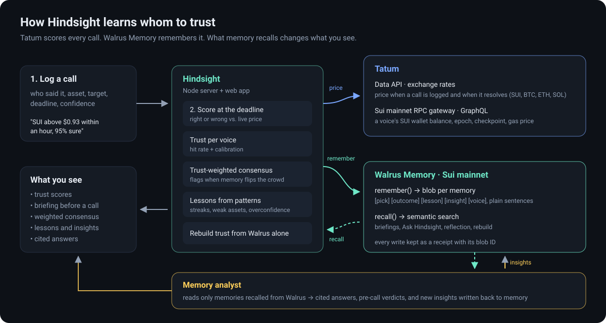

Building Hindsight: a pick journal that remembers who was right
The problem: nobody keeps score
Everyone takes market calls from someone: a desk analyst, a loud account on X, a friend in a group chat, their own gut. The calls arrive with confidence attached ("95%, trust me") and vanish once the deadline passes. Nobody goes back to check who was right, so the loudest voice keeps the same weight as the most accurate one.
Hindsight is a journal that keeps score for you. You log a call with who made it, the asset, the target, the deadline and how sure they were. When the deadline passes, Hindsight checks the live price, marks the call right or wrong, and remembers it. Over time it learns whom to trust, and that knowledge changes what the app shows you.
What it does
- Log a call. It is priced the moment it is logged.
- Score it automatically at the deadline against the live price.
- Trust scores per voice, learned from outcomes. Confident misses cost more than hesitant ones.
- A pre-call briefing. Type a voice's name and Hindsight recalls their record and most relevant past calls before you log anything.
- Trust-weighted consensus. The crowd view, re-weighted by each voice's track record, with a flag when memory flips the crowd's view.
- Lessons. When a pattern appears (a losing streak, a weak asset, overconfidence, poor calibration), Hindsight writes it down as a lesson.
- Ask Hindsight. Plain-language recall over everything it has learned.
- Skin in the game. A voice can link a Sui wallet; Hindsight shows its on-chain SUI balance next to their record.
- Memory analyst. Plain-language answers, a one-line verdict before each call, and reflections that write new insights back to Walrus, all built only from what Walrus recalls.

How it uses Walrus Memory
Walrus Memory is the long-term brain. Every event becomes a plain-English memory written to Sui mainnet through the managed relayer with the @mysten-incubation/memwal SDK, in the namespace hindsight:
[hindsight:pick] Voice "@MoonBoyMax" called SUI ABOVE $0.931 ... with 97% confidence
[hindsight:outcome] Voice "@MoonBoyMax" was WRONG on SUI ABOVE $0.931 ... Record now 0/3 right, trust 8%
[hindsight:lesson] Voice "@MoonBoyMax" has been wrong 3 times in a row. Fade or ignore their next call.Writing memories as sentences rather than JSON was deliberate. Semantic recall() works well on them, and a person can read the memory directly. Structure lives inside the sentence ("was RIGHT", "at 80% confidence", id=p_…), so the app can still parse it back.
Recall drives three features:
- Briefings:
recall('What happened before when voice "X" called SUI?')runs before every new call. - Ask Hindsight: free-text questions go straight to
recall(). - Rebuild trust from Walrus: the strongest test of the design. Hindsight recalls the outcome memories, parses them and recomputes every voice's trust without touching its local database. The local state is a cache; the memory on Walrus is the source of truth, and it is portable to any other app holding the key.
The memory analyst: answers that cite Walrus
Recall returns raw memories. To turn them into something a person can act on, Hindsight adds a small analyst that sees only the memories recalled from Walrus for that request, numbered, and must cite them. Three things use it:
- Ask Hindsight answers in plain language with numbered citations; each number links to the recalled memory (and its blob ID) underneath.
- Pre-call verdict. When you type a voice and an asset, the briefing opens with one line such as "Give it little weight: 0/3 on SUI and missed calls made at 99% and 97% confidence."
- Reflection. Every few outcomes (or on demand) Hindsight reads outcome and lesson memories back from Walrus, looks for patterns across voices, assets and confidence levels, and writes up to three new
[hindsight:insight]memories. Those insights are recalled in later briefings and answers, so the memory improves itself.
The analyst never sees the local database, only recalled memories, so every claim it makes can be traced to a blob on Walrus mainnet. Without an API key the app still works; Ask simply lists the recalled memories.
Every memory is a real blob on Walrus mainnet. Each receipt in the app links to Walruscan, which shows the blob's size, its Sui object, the certification transaction and the SEAL encryption step that Walrus Memory applies before storing it.
Writes go through a paced queue (about one every 13 seconds) because the relayer limits each delegate key to a few remember calls per minute. Rate-limit responses are retried, and every successful write is kept as a receipt with its Walrus blob ID, shown in the app.
How it uses Tatum
- Data API, exchange rates:
GET /v4/data/rate/symbol?symbol=SUI&basePair=USDprices each call when it is logged and when it resolves (SUI, BTC, ETH, SOL), cached for 60 seconds to stay well inside the free plan's credits. - Sui mainnet RPC gateway: one surprise was that Tatum's Sui gateway now serves Sui's GraphQL RPC at
sui-mainnet.gateway.tatum.io/graphql, following Sui's deprecation of JSON-RPC (JSON-RPC calls to the base URL return 404). Hindsight uses it to read a linked wallet's SUI balance and the current epoch, checkpoint and reference gas price:
query($a: SuiAddress!) {
address(address: $a) { balance(coinType: "0x2::sui::SUI") { totalBalance } }
}How it learned over time
To show the loop end to end, I seeded the journal with four voices with different habits and let their calls resolve against live Tatum prices on 7 November 2026:
| Voice | Habit | Record | Trust |
|---|
Within minutes the memory had told a story no single call could. These are the lessons and reflections it wrote back to Walrus:
Then the consensus panel changed. On the open SUI calls the crowd was split or leaning bullish, while the trust-weighted view, built from what Walrus remembered, leaned clearly bearish, so Hindsight flagged that memory flips the crowd's view.
Finally, Rebuild trust from Walrus recovered every outcome from memory alone and reproduced the same ranking. Every number in that table can be rebuilt from blobs on Walrus mainnet.
The trust formula
Trust = 0.7 × Bayesian hit rate (one imaginary hit and one imaginary miss as a prior) + 0.4 × (calibration − 0.25), where calibration is 1 − Brier score. A voice that is right 60% of the time at honest 60% confidence beats one that is right 60% of the time while claiming 95%.
Consensus counts one vote per voice (their latest open call on that asset). The crowd view is a plain headcount; the weighted view multiplies each vote by trust × stated confidence × evidence, where evidence = (n + 1) / (n + 3) for n scored calls, so a voice with no record cannot outweigh one with a proven record.
Try it
git clone https://github.com/Automationbot24x7/hindsight && cd hindsight
npm install
cp .env.example .env # Tatum key + Walrus Memory delegate key and account ID
npm start # http://localhost:8787The hosted demo is a read-only snapshot of the live journal: the calls, outcomes, lessons and blob IDs are real, and the full receipt list is in receipts.json.
What's next
- Sports and prediction-market sources alongside crypto prices.
- Share a voice's memory between friends, so one group chat learns together.
- Agent payments: let a voice stake a small amount on their own call.